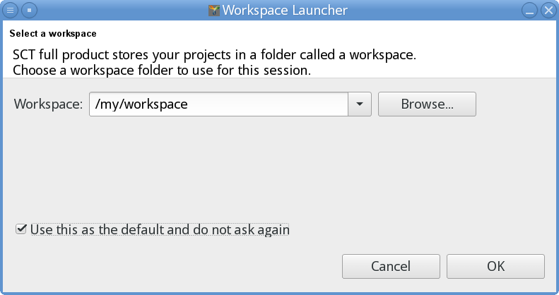

![Unpacking the downloaded file on Windows [1]](images/windows7_install_010_eclipse_extract_1.png "Unpacking the downloaded file on Windows [1]")
In order to start working with YAKINDU Statechart Tools, you have to install the software on your computer. We are assuming you have downloaded the software package and stored it somewhere on your machine.
The installation process boils down to
This is explained in more detail in section "Platform overview" and the following sections.
Java developers might want to read section JRE not found, in case they encounter a certain problem.
YAKINDU Statechart Tools is based on the Java programming language and requires Java 7 or higher. A Java Runtime Environment (JRE) must be installed on your computer.
Installation of Java is beyond the scope of this document. You can find more information on Java and download it for free from Oracle Corporation at https://www.java.com/. Before downloading Java, make sure you are picking the variant with the correct bit size, i. e. either 32 or 64 bit, whichever is appropriate for your computer.
Internally, YAKINDU Statechart Tools are based on Eclipse , an integrated development environment (IDE). YAKINDU Statechart Tools are running inside the Eclipse environment. When you are installing YAKINDU Statechart Tools, a full-fledged Eclipse instance will be put on your computer. Currently (summer 2016) it is the Mars release.
If you are new to Eclipse, you might find the Eclipse Help useful, especially the „Workbench User Guide”.
If you are an experienced Eclipse user, you can install YAKINDU Statechart Tools into a existing Eclipse instance from an update site.
You can install YAKINDU Statechart Tools as a stand-alone software package under the following operating systems:
Alternatively you can install YAKINDU Statechart Tools into an existing Eclipse instance.
This chapter describes how to install YAKINDU Statechart Tools on a Windows 7 machine.
Unpack the software distribution file. Use the file explorer to open the directory you downloaded the software distribution file to, right-click on the latter, and select Extract All... in the context menu.
Unpacking the downloaded file on Windows [1]
Choose a directory for YAKINDU Statechart Tools (YAKINDU SCT). The example below assumes you want to install the software in the C:\Program Files\YAKINDU directory.
Depending on your permissions, you might not be able to create a directory and install software under C:\Program Files. In this case, please choose another installation directory at a location you are allowed to write to.
![Unpacking the downloaded file on Windows [2]](images/windows7_install_020_eclipse_extract_2.png "Unpacking the downloaded file on Windows [2]")
Unpacking the downloaded file on Windows [2]
Click on Extract to start the extraction process. With Window’s built-in unpacker, this will take surprisingly much time. Alternatively, you can use a 3rd-party unpacker like 7-Zip. Saves you a lot of time!
After unpacking, you will find a folder yakindu-sct in your installation directory, i. e. C:\Program Files\YAKINDU\yakindu-sct in our example, as shown in the image below:

The extracted yakindu-sct folder
The contents of the yakindu-sct folder looks like this:

Contents of the extracted yakindu-sct folder
There you are: You have installed YAKINDU Statechart Tools. Now you should start it.
Start YAKINDU Statechart Tools by running the SCT.exe executable.
To do so, please double-click (or single-click, depending on your Windows settings) on the YAKINDU symbol shown in the sample screenshot above.
Depending on the Windows settings and your permissions, you might get the following security warning, indicating that you downloaded the application from a potentially unsecure source:

Windows security warning
Uncheck the Always ask before opening this file option. Click Run to continue starting the application. Subsequently starting YAKINDU Statechart Tools will not show this security warning again.
While YAKINDU Statechart Tools is starting up, it is showing a splash screen:

YAKINDU Statechart Tools starting up and showing a splash screen
The software needs a workspace directory where it stores its so-called projects along with other data. During the first startup, the Workspace Launcher dialog asks you to specify the workspace directory in the Workspace field. Please select a new and empty one.
In the example below, we chose the C:\Users\joedoe\workspace directory as our workspace. We also checked the "Use this as the default and do not ask again" option. This is sensible, because on subsequent startups, YAKINDU Statechart Tools won’t ask for a workspace directory again. Instead it will always use the one we chose once and forever. (You can still change the workspace later via File → Switch Workspace in the main menu.)

Selecting a workspace
Click on the OK button to proceed.
On the first start, YAKINDU Statechart Tools presents a Welcome window:

YAKINDU Statechart Tools presenting the „Welcome” window
You can browse the material shown here, if you want. When you are done, please close the Welcome tab or click on Workbench at the upper right. Both actions are leading to the workbench:

The YAKINDU Statechart Tools workbench
This is your working environment now. Congratulations, you have just installed YAKINDU Statechart Tools with Eclipse!
You can proceed now to create your first YAKINDU Statecharts Tools project.
This chapter describes how to install YAKINDU Statechart Tools on a Mac computer under Mac OS X.
When downloading the ZIP file containing the software distribution in a browser to your local disk, the Archive Utility automatically unpacks it by default. Upon success, the ZIP file is removed. Alternatively you can unpack the ZIP file manually by double-clicking it.
Unpacking will provide you with the YAKINDU SCT application bundle.
Move the unpacked application bundle to your Applications folder. Alternatively, you can also move it somewhere else as you see fit. The screenshot below shows the YAKINDU SCT application bundle having been moved to Applications.

The YAKINDU Statecharts Tools application in the „Applications” directory
There you are: You have installed YAKINDU Statechart Tools. Now you should start it.
Start YAKINDU Statechart Tools by running the YAKINDU SCT application.
To do so, please double-click on the YAKINDU symbol shown in the sample screenshot above.
Upon the first start, Mac OS X will verify the application and show you the following security warning, indicating that you did not download the application from Apple’s App Store, but from a potentially unsecure source instead:

Mac OS X warning
Click Open to continue starting the application. Subsequently starting YAKINDU Statechart Tools will not show that security warning again.
While YAKINDU Statechart Tools is starting up, it is showing a splash screen:
YAKINDU Statechart Tools starting up and showing a splash screen
The software needs a workspace directory where it stores its so-called projects along with other data. During the first startup, the Workspace Launcher dialog asks you to specify the workspace directory in the Workspace field. Please select a new and empty one.
In the example below, we chose the /Users/joedoe/workspace directory as our workspace. We also checked the "Use this as the default and do not ask again" option. This is sensible, because on subsequent startups, YAKINDU Statechart Tools won’t ask for a workspace directory again. Instead it will always use the one we chose once and forever. (You can still change the workspace later via File → Switch Workspace in the main menu.)

Selecting a workspace
Click on the OK button to proceed.
On the first start, YAKINDU Statechart Tools presents a Welcome window:

YAKINDU Statechart Tools presenting the „Welcome” window
You can browse the material shown here, if you want. When you are done, please close the Welcome tab or click on Workbench at the upper right. Both actions are leading to the workbench:

The YAKINDU Statechart Tools workbench
This is your working environment now. Congratulations, you have just installed YAKINDU Statechart Tools with Eclipse!
You can proceed now to create your first YAKINDU Statecharts Tools project.
This chapter describes how to install YAKINDU Statechart Tools on a Linux machine using a command-line tool. The installation doesn’t require root permissions.
Choose a directory for YAKINDU Statechart Tools. The commands below assume you want to install the software in the /my/software directory. Please modify the commands appropriately to install somewhere else!
Go to the installation directory:
cd /my/software/
Unpack the software distribution file. If the downloaded file is located in /download/sct-linux.gtk.x86_64.zip, use the following command to unpack in the installation directory:
unzip /download/sct-linux.gtk.x86_64.zip
This will create a folder yakindu-sct in your installation directory, i. e. /my/software/yakindu-sct in our example, as shown in the image below:

The extracted „yakindu-sct” folder
The contents of the yakindu-sct folder looks like this:

Contents of the extracted „yakindu-sct” folder
There you are: You have installed YAKINDU Statechart Tools. Now you should start it.
Start YAKINDU Statechart Tools by running the SCT executable.
To do so, please enter the command
yakindu-sct/SCT
in your installation directory. Or issue the command
/my/software/yakindu-sct/SCT
if your command shell is in any other working directory.
From a file browser, you can start YAKINDU Statechart Tools by clicking on the SCT symbol, shown as a gear-wheel in the sample screenshot above.
While YAKINDU Statechart Tools is starting up, it is showing a splash screen:

YAKINDU Statechart Tools starting up and showing a splash screen
The software needs a workspace directory where it stores its so-called projects along with other data. During the first startup, the Workspace Launcher dialog asks you to specify the workspace directory in the Workspace field. Please select a new and empty one.
In the example below, we chose the /my/workspace directory as our workspace. We also checked the "Use this as the default and do not ask again" option. This is sensible, because on subsequent startups, YAKINDU Statechart Tools won’t ask for a workspace directory again. Instead it will always use the one we chose once and forever. (You can still change the workspace later via File → Switch Workspace in the main menu.)

Selecting a workspace
Click on the OK button to proceed.
On the first start, YAKINDU Statechart Tools presents a Welcome window:

YAKINDU Statechart Tools presenting the „Welcome” window
You can browse the material shown here, if you want. When you are done, please close the Welcome tab or click on Workbench at the upper right. Both actions are leading to the workbench:

The YAKINDU Statechart Tools workbench
This is your working environment now. Congratulations, you have just started YAKINDU Statechart Tools!
You can proceed now to create your first YAKINDU Statecharts Tools project.
This chapter describes the steps that are needed to install YAKINDU Statechart Tools to an existing Eclipse instance. Let’s assume you already have Eclipse up and running and now you want to install YAKINDU Statechart Tools as an additional software item (plugin).
In the the Help menu, select the Install New Software menu item:

Selecting „Help → Install New Software” in the main menu
The Install wizard opens:

The „Install” wizard
Click on the Add... button near the upper right corner of the wizard.
A dialog opens, asking you to specify the update repository you want to install the new software from. The appropriate update repository depends on your Eclipse version. Please enter the respective update repository into the Location field.
| Eclipse | YAKINDU Statechart Tools Update Repository | ||
|---|---|---|---|
| Name | Version | Release Build | |
| Neon | 4.6 | http://updates.yakindu.org/sct/neon/releases/ | |
| Mars | 4.5 | http://updates.yakindu.org/sct/mars/releases/ | |
| Luna | 4.4 | http://updates.yakindu.org/sct/luna/releases/ | |
Please note that YAKINDU Statechart Tools might take some time to catch up with more recent Eclipse releases. The corresponding update repositories will not be available until then.
Enter some text into the
Name field. This text is abitrary in principle, but you should choose something that makes it easier for you to identify this particular update repository among other update repositories. In the example below, the repository’s name is
YAKINDU Statechart Tools (Luna). It describes which piece of software the repository provides (YAKINDU Statechart Tools) and which Eclipse release that software is compatible with (Luna, i. e. Eclipse 4.4).

Adding a software repository
After entering name and location of the update repository, click OK.
Eclipse establishes a network connection to the update repository, asks it for available software items and shows them in the install wizard:

Selecting YAKINDU Statechart Tools software items
Please check at least Xtext Integration Utilities and – no surprise – YAKINDU SCT. (You can also install the respective source code items. However, unless you want to have a look at that source code or even want to modify it, you don’t need them.)
Click Next >.
Eclipse tries to integrate the new software with the software that is already installed. If it detects any mismatches between requirements and provisions, Eclipse will try to find a solution in order to mitigate this problem. The screenshot below shows such a case:

Install remediation page
Select the most appropriate solution, then click Next >.
The wizard shows the software to be installed and gives you the opportunity to review the changes:

Reviewing the items to be installed
Click Next >.
The wizard asks you to review and accept the terms of the new software’s license agreements.

Accepting the new software’s license agreements
Select the radio button labelled I accept the terms of the license agreements (if you do), then click Finish.
Eclipse starts to download the software and installs it on your computer. This may take some time.

Installing software in progress ...
If the installation was completed successfully, Eclipse needs a restart in order to have the changes take effect. A dialog asks whether you want to restart Eclipse right now or later:

Restarting Eclipse after software installation
After the restart, Eclipse displays its Welcome window, now also featuring YAKINDU Statechart Tools:

Eclipse presenting the „Welcome” window
To check whether a new YAKINDU Statechart Tools release is available and to install it, please select the Help → Check for Updates menu item.

Selecting „Help → Check for Updates” in the main menu
If Eclipse finds any software items to be updated – not just YAKINDU Statechart Tools –, it will guide you through the process of updating them. Generally Eclipse has to be restarted afterwards to have any changes take effect.
You can configure Eclipse as follows to automatically check for updates:
Select the Window → Preferences menu item. The Preferences dialog opens.
Go to the Install/Update → Automatic Updates section. Here you can configure whether and when Eclipse should check for updates and what to do when it finds any.

Configuring automatic update
If you want to develop Java source code, you need a Java Runtime Environment (JRE) or Java Development Kit (JDK) in your workspace.
Usually Eclipse’s Java Development Toolkit (JDT), which is bundled with YAKINDU Statechart Tools, automatically finds one or more JREs on your machine. However, under certain circumstances this won’t work and even the JRE that is used to run Eclipse cannot be found. In this case, you will have to add a JRE definition to your workspace by hand.
In order to check whether you are affected, proceed as follows:
If the list of installed JREs is empty, you are affected by the problem and will have to manually add a JRE definition. Click on the Add… button and follow the Add JRE wizard. The Eclipse documentation explains in more detail how to add a new JRE definition to your workspace.

Installed JREs